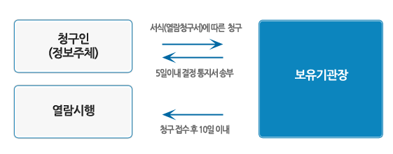

이용약관(개인정보처리방침)
교통사고분석시스템의 이용약관 안내입니다.
도로교통공단의 교통사고 분석시스템의 개인정보 처리방침
교통사고 분석시스템 (이하 "TAAS")은 도로교통공단의 패밀리사이트로서 취급하는 모든 개인정보는 관련법령에 근거하거나 정보주체의 동의에 의하여 도로교통공단에서 수집·
보유 및 처리되고 있습니다.
「공공기관의 개인정보보호에 관한 법률」은 이러한 개인정보의 취급에 대한 일반적 규범을 제시하고 있으며, 도로교통공단은 이러한 법령의 규정에 따라 수집·보유 및 처리하는 개인
정보를 공공업무의 적절한 수행과 국민의 권익을 보호하기 위해 적법하고 적정하게 취급할 것입니다.
또한, 도로교통공단은 관련 법령에서 규정한 바에 따라 우리 기관에서 보유하고 있는 개인정보에 대한 열람청구권 및 정정·삭제청구권 등 여러분의 권익을 존중하며, 여러분은 이
러한 법령상 권익의 침해 등에 대하여 행정심판법에서 정하는 바에 따라 행정심판을 청구할 수 있습니다. 다음은 TAAS의 개인정보 보호방침을 설명드리겠습니다.
TAAS의 개인정보 보호방침은 도로교통공단이 운영하는 여러 홈페이지와 같이 이용자 여러분의 개인정보를 보호하기 위한 [홈페이지 이용자의 개인정보 보호]와 소관업무를 수행
하는데 필요한 개인정보 취급에 대한 [컴퓨터 등에 의해 처리되는 개인정보 보호]로 구성되어 있습니다.
TAAS 홈페이지에서의 개인정보보호
여기는 TAAS 웹사이트 입니다. 교통사고 분석시스템 홈페이지의 이용에 대해 감사드리며, 홈페이지에서의 개인정보 보호방침에 대하여 설명을 드리겠습니다. 이는 현행 「공공기관 의 개인정보보호에 관한 법률」 및 [공공기관의 개인정보보호를 위한 기본지침]에 근거를 두고 있습니다.
자동으로 수집, 저장되는 정보
- • 여러분이 TAAS 홈페이지를 이용할 경우 다음의 정보는 자동적으로 수집, 저장됩니다.
- • 이용자 여러분의 인터넷 도메인명과 TAAS 홈페이지를 방문할 때 거친 웹사이트의 주소
- • 이용자의 브라우져 종류 및 OS 방문일시 등
위와 같이 자동 수집·저장되는 정보는 이용자 여러분에게 보다 나은 서비스를 제공하기 위해 홈페이지의 개선과 보완을 위한 통계분석, 이용자와 웹사이트간의 원활한 의사소통 등 을 위해 이용되어질 것입니다. 다만, 법령의 규정에 따라 이러한 정보를 제출하게 되어 있을 경우도 있다는 것을 유념하시기 바랍니다.
[컴퓨터 등에 의해 처리되는 개인정보]에 대한 취급 및 처리방침
개인정보의 수집 및 보유
| 항목 | 내용 |
|---|---|
| 보유목적 | 페이지 서비스 제공을 위한 회원관리 |
| 보유근거 | 홈페이지 회원 약관 |
| 수집방법 | 홈페이지를 통한 개인동의 대상범위 대국민 |
| 보유기간 | 회원탈퇴전까지 |
| 열람예정일 | 수시 |
| 사용부서 | 통합DB처 |
| 열람청구부서 및 주소 | 통합DB처/서울시 중구 왕십리로 407 도로교통공단 |
| 열람제한항목 | 없음 |
| 열람제한사유 | 없음 |
| 제공기관 | 없음 |
| 제공근거 | 없음 |
| 제공항목 | 없음 |
| 기록항목 | 이름, 전화번호, 이메일 |
개인정보의 이용 및 제공의 제한
TAAS에서 수집·보호하고 있는 개인정보는 일반 행정정보와 달리 이용 및 제공에 엄격한 제한이 있는 정보입니다. 「공공기관의 개인정보보호에 관한 법률」제10조(이용 및 제공의 제한)는 이에 관하여 다음과 같이 규정하고 있습니다. 다른 법률에 의해 보유기관 내부에서 이용하거나 보유기관이외의 자에게 제공하는 경우를 제외하고는 당해 개인정보파일의 보유목적 외의 목적으로 처리정보를 이용하게 하거나 제공하여서는 아니된다. 다음의 경우, 어느 하나에 해당하는 경우에는 당해 개인정보파일의 보유목적외의 목적으로 처리정보를 이용하게 하거나 제공할 수 있다. 다만, 어느 하나에 해당하더라도 정보주체 또는 제3자의 권리와 이익을 부당하게 침해할 우려가 있다고 인정되는 때에는 그러하지 아니하다.
정보주체의 동의가 있거나 정보주체에게 제공하는 경우 처리정보를 보유목적 외의 목적으로 이용하게 하거나 제공하지 아니하면 다른 법률에서 정하는 소관 업무를 수행할 수 없는 경우로서 제20조에 따른 공공기관개인정보보호심의위원회의 심의를 거친 경우 조약 기타 국제협정의 이행을 위하여 외국정부 또는 국제기구에 제공하는 경우 통계작성 및 학술연구등의 목적을 위한 경우로서 특정개인을 식별할 수 없는 형태로 제공하는 경우 정보주체 또는 그 법정대리인이 의사표시를 할 수 없는 상태에 있거나 주소불명등으로 동의를 할 수 없는 경우로서 정보 주체외의 자에게 이용하게 하거나 제공하는 것이 명백히 정보주체에게 이익이 된다고 인정되는 경우 범죄의 수사와 공소의 제기 및 유지에 필요한 경우 법원의 재판업무수행을 위하여 필요한 경우
우리기관은 개인정보의 이용 및 제공에 있어 관계법령을 엄수하여 부당하게 이용되지 않도록 노력하겠습니다.
개인정보파일의 열람 및 정정·삭제 청구
우리기관이 보유하고 있는 개인정보파일은「공공기관의 개인정보보호에 관한 법률」(다른 법률에 규정이 있는 경우는 해당 법률)의 규정이 정하는 바에 따라 열람을 청구할 수 있습니다.
열람청구 절차(「공공기관의 개인정보보호에 관한 법률」의 경우)

다음 사항은 「공공기관의 개인정보보호에 관한 법률」제13조(처리정보의 열람제한) 규정에 의하여 열람을 제한할 수 있습니다.
1. 다음 사항에 해당하는 업무로서 당해업무의 수행에 중대한 지장을 초래하는 경우
- 조세의 부과·징수 또는 환급에 관한 업무
- 조세의 부과·징수 또는 환급에 관한 사항
- 학력·기능 및 채용에 관한 시험, 자격의 검사, 보상금·급부금의 산정 등 평가 또는 판단에 관한 업무
- 다른 법률에 의한 감사 및 조사에 관한 업무
- 토지 및 주택 등에 관한 부동산 투기를 방지하기 위한 업무 등
2. 개인의 생명·신체를 해할 우려가 있거나 개인의 재산과 기타의 이익을 부당하게 침해할 우려가 있는 경우본인의 개인정보를 열람한 정보주체는 다음의 경우 정정·삭제를 청구할 수 있습니다
- 정정·삭제 청구의 범위
- - 사실과 다르게 기록된 정보의 정정·삭제항
- - 특정항목에 해당사실이 없는 내용에 대한 삭제
- 정정·삭제 청구의 절차(「공공기관의 개인정보보호에 관한 법률」의 경우)
권익침해 구제
공공기관의 개인정보보호에 관한 법률」제12조(처리정보의 열람) 제1항 및 제14조제1항(처리정보의 정정)의 규정에 의한 청구에 대하여 공공기관의 장이 행한 처분 또는 부작위로 인하여 권리 또는 이익이 침해를 받은 자는 행정심판법이 정하는 바에 따라 행정심판을 청구할 수 있습니다.
| 항목 | 내용 |
|---|---|
| 서울특별시 행정심판 위원회 | (02) 731-6157, 6557 |
| 부산광역시 행정심판 위원회 | (051) 888-2212 |
| 대구광역시 행정심판 위원회 | (053) 429-2137 |
| 인천광역시 행정심판 위원회 | (032) 440-2292 |
| 광주광역시 행정심판 위원회 | (062) 606-2132 |
| 대전광역시 행정심판 위원회 | (042) 600-2152 |
| 울산광역시 행정심판 위원회 | (052) 229-2132 |
| 경기도 행정심판 위원회 | (031) 249-2132 |
| 강원도 행정심판 위원회 | (033) 249-2132, 2478 |
| 충청북도 행정심판 위원회 | (043) 220-2321~4 |
| 충청남도 행정심판 위원회 | (042) 251-2133 |
| 전라북도 행정심판 위원회 | (063) 280-2132 |
| 전라남도 행정심판 위원회 | (062) 607-2131 |
| 경상북도 행정심판 위원회 | (053) 950-2133 |
| 경상남도 행정심판 위원회 | (055) 279-2133 |
| 제주도 행정심판 위원회 | (064) 710-2272 |
※ 행정심판에 대한 자세한 사항은 법제처 홈페이지(http://www.moleg.go.kr)를 참고하시기 바랍니다.
침해사항의 신고
도로교통공단 개인정보관리책임관 : 경영정보처 한영섭 처장
- - 이메일 : kortic@koroad.or.kr
- - 전화번호 및 Fax : 02-2230-6350 / 02-2230-6359
- - 주소 : 서울시 중구 왕십리로 407(신당5동 171번지) 도로교통공단
TAAS 홈페이지 개인정보관리책임관 : 통합DB 한만식 처장
- - 이메일 : hmansik@koroad.or.kr
- - 전화번호 및 Fax : 02-2230-6342 / 02-2230-6444
- - 주소 : 서울시 중구 왕십리로 407(신당5동 171번지) 도로교통공단
개인정보 침해ㆍ신고 처리 절차
공공기관의 개인정보보호에 관한 법률」제12조(처리정보의 열람) 제1항 및 제14조제1항(처리정보의 정정)의 규정에 의한 청구에 대하여 공공기관의 장이 행한 처분 또는 부작위로 인하여 권리 또는 이익이 침해를 받은 자는 행정심판법이 정하는 바에 따라 행정심판을 청구할 수 있습니다.
※ 행정심판에 대한 자세한 사항은 법제처 홈페이지(http://www.moleg.go.kr)를 참고하시기 바랍니다.
| 1. 침해신고접수 | 2. 침해사실조사 | 3. 처리 | 4. 결과통보 |
|---|---|---|---|
| 웹사이트 또는 방문접수 (해당기관) |
침해여부 확인, 침해기관 방문 및 서면조사 (침해사고신고대장) |
처리 및 조치 (조치보고서) |
신고인 및 행안부 통보 (결과통보서) |
법령의 규정 등에 의하여 수집한 개인정보가 수집 및 처리목적에 맞게 이용될 수 있도록 항시 지도· 감독하겠습니다.
이전 개인정보처리방침 보기 : 2014년 05월 30일 ~ 2015년 5월 13일 적용)
주소 : 우)100-789 서울특별시 중구 왕십리로 407(신당5동 171) 도로교통공단 대표전화: 02-2230-6114 팩스 : 02-2230-6113
Copyright © 2015 KoROAD. All rights Reserved.